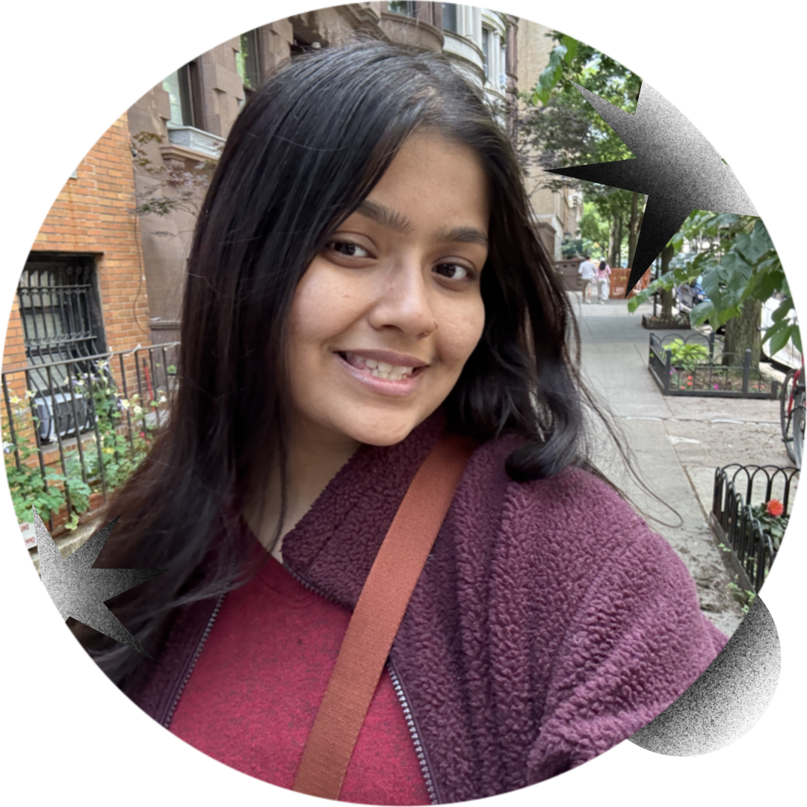

Insia Haque is an artist passionate about creating meaningful
design for social impact.
I bring stories to life through illustration and design. Currently
Design Editor for 34th
Street Magazine and The Daily Pennsylvanian,
interning at the Innocence Project,
and studying Cognitive Science and Design at the University of
Pennsylvania ✳
This website is a work in progress! If you'd like to read through my print layouts, view them
here.
If you have any questions about any of my work, feel free to email me at
insia@sas.upenn.edu!
